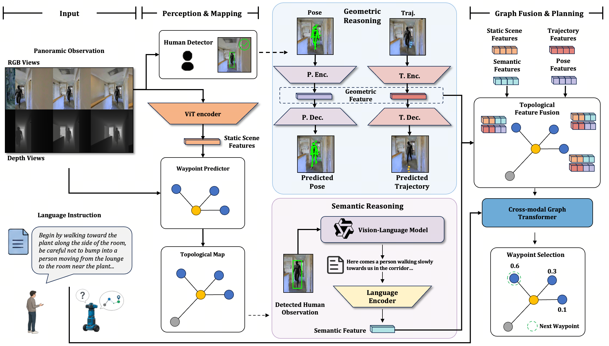
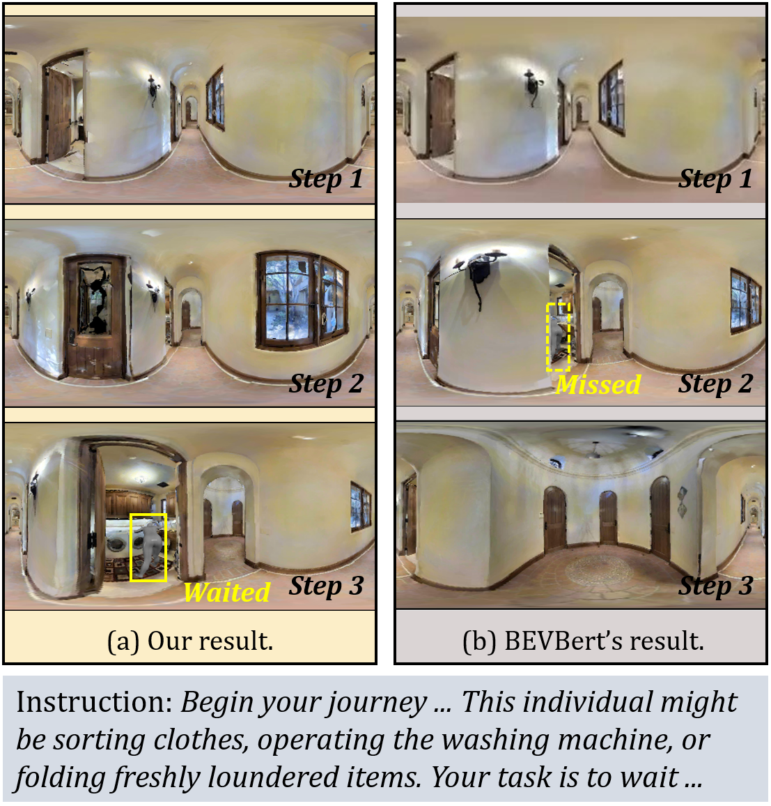
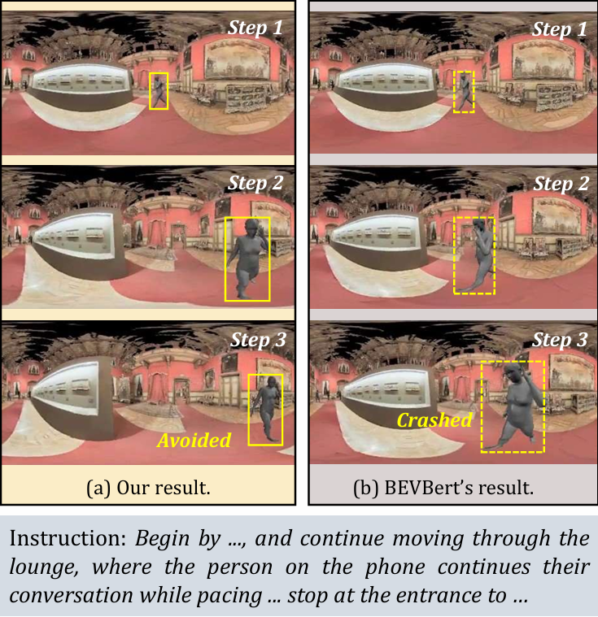
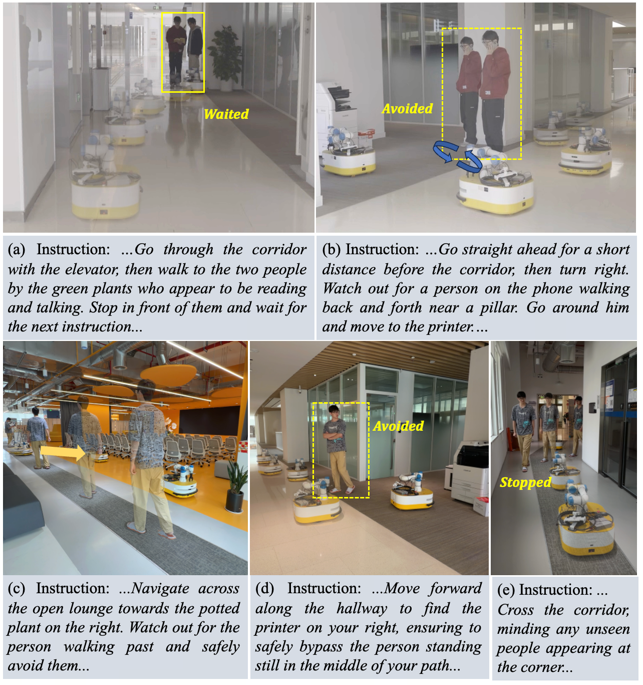

Fig. 7(a): Interacting Pedestrians
Stop in front of two interacting pedestrians and wait at a socially appropriate distance.
Vision-Language Navigation in Human-Populated Environments
Vision-Language Navigation (VLN) has achieved remarkable progress by scaling data and model capacity. However, the assumption of a static environment breaks down in real-world indoor scenarios, where robots inevitably encounter dynamic pedestrians. Existing human-aware approaches typically treat humans as moving obstacles based on implicit visual cues, lacking explicit reasoning about human intentions and social norms.
HCSG is a human-centric framework for VLN that shifts the paradigm from passive collision avoidance to active human behavior understanding. It introduces a unified Human Understanding Module with two complementary capabilities: geometric forecasting, which predicts human pose and trajectory to anticipate future motion, and semantic interpretation, which uses a Vision-Language Model to generate natural-language descriptions of human actions and intentions. These semantic-geometric representations are fused into the agent's topological map for instruction-conditioned planning, while a Social Distance Loss encourages socially compliant interaction.
HCSG injects explicit human-centric reasoning into a waypoint-based VLN policy through parallel geometric and semantic streams.

At timestep t, HCSG follows waypoint-based VLN: the agent receives panoramic observations Ot = (Vtrgb, Vtdepth), and an external waypoint predictor fway generates candidate nodes Wt for the next action.
The visual encoder extracts static node features as Ft,kstatic = Ev(Ot,k); when humans are detected, the waypoint pause is used to collect a short temporal observation sequence S = ⟨Oτ⟩τ=tt+m-1.
For detected human j, the geometric stream encodes Ft,k,jgeo = Eg(Pj1:m), while the semantic stream generates Tt,k,j = VLM(It,k,j, Q) and encodes Ft,k,jsem = Es(Tt,k,j).
These cues are fused with the static scene representation as Ft,kfused = MLP(Ft,kstatic, (1/J)∑j=1J (Ft,k,jgeo + Ft,k,jsem)), and the final waypoint action is selected by at+1 = FFN(GASA(Ftfused, Wt, I)).
On HA-VLNCE, HCSG improves navigation success while substantially reducing human-related collisions.
| Models | Validation Seen | Validation Unseen | ||||
|---|---|---|---|---|---|---|
| TCR ↓ | CR ↓ | SR ↑ | TCR ↓ | CR ↓ | SR ↑ | |
| HA-VLN-CMA | 63.09 | 0.77 | 0.05 | 47.06 | 0.77 | 0.07 |
| HA-VLN-CMA-DA | 17.45 | 0.61 | 0.17 | 27.25 | 0.69 | 0.09 |
| HA-VLN-VL | 4.44 | 0.52 | 0.20 | 6.63 | 0.59 | 0.14 |
| LAW-VLNCE | 4.31 | 0.54 | 0.21 | 5.88 | 0.65 | 0.15 |
| DUET | 4.18 | 0.48 | 0.22 | 5.74 | 0.63 | 0.16 |
| ETPNav | 4.07 | 0.43 | 0.24 | 6.94 | 0.58 | 0.17 |
| GridMM | 3.92 | 0.45 | 0.24 | 5.76 | 0.59 | 0.18 |
| BEVBert | 3.64 | 0.46 | 0.27 | 4.71 | 0.55 | 0.21 |
| HCSG (Ours) | 3.63 | 0.34 | 0.29 | 5.02 | 0.36 | 0.24 |


Five physical robot scenarios correspond to Fig. 7(a-e), covering stationary interaction targets, pacing or crossing pedestrians, hallway blockage, and blind-corner encounters.

Stop in front of two interacting pedestrians and wait at a socially appropriate distance.
Avoid a pacing pedestrian near a pillar through proactive detour planning.
Navigate to the target while safely avoiding a moving pedestrian crossing the path.
Identify a stationary human in the hallway and bypass without treating them as the goal.
Traverse a corridor while yielding to an unseen pedestrian appearing from a blind corner.
| Real-World Scenario | BEVBert | HCSG (Ours) |
|---|---|---|
| Scenario (a): Stop in front of interacting pedestrians | 3/10 (30%) | 9/10 (90%) |
| Scenario (b): Avoid pacing pedestrian on phone | 3/10 (30%) | 7/10 (70%) |
| Scenario (c): Navigate to plant, avoid moving human | 5/10 (50%) | 9/10 (90%) |
| Scenario (d): Bypass standing human in hallway | 6/10 (60%) | 9/10 (90%) |
| Scenario (e): Traverse corridor, avoid corner pedestrian | 2/10 (20%) | 7/10 (70%) |
| Overall Average | 19/50 (38%) | 41/50 (82%) |
Citation information will be updated after publication.
@article{xu2026hcsg,
title={HCSG: Human-Centric Semantic-Geometric Reasoning for Vision-Language Navigation},
author={Xu, Haoxuan and Li, Tianfu and Chen, Wenbo and Liu, Yi and Wu, Jin and Lei, Huashuo and Lou, Yunfan and Wang, Lujia and Wang, Hesheng and Li, Haoang},
year={2026}
}